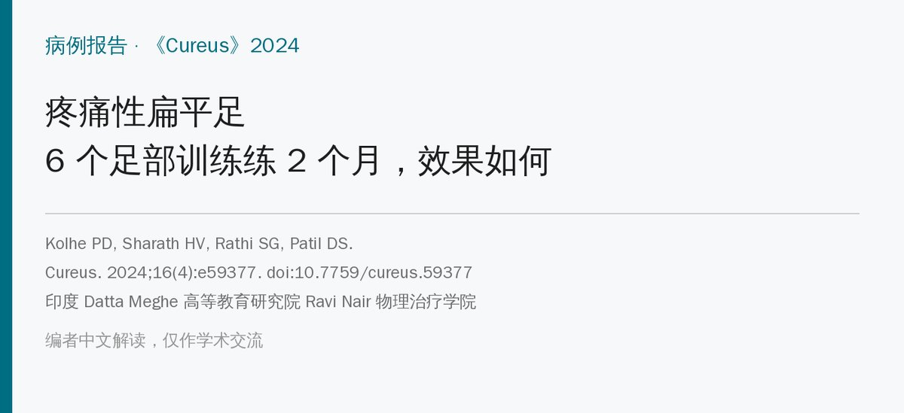
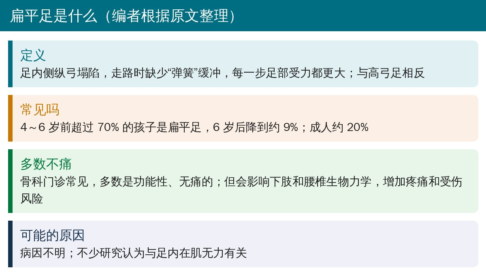
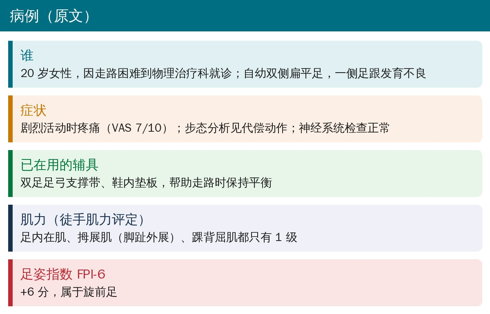
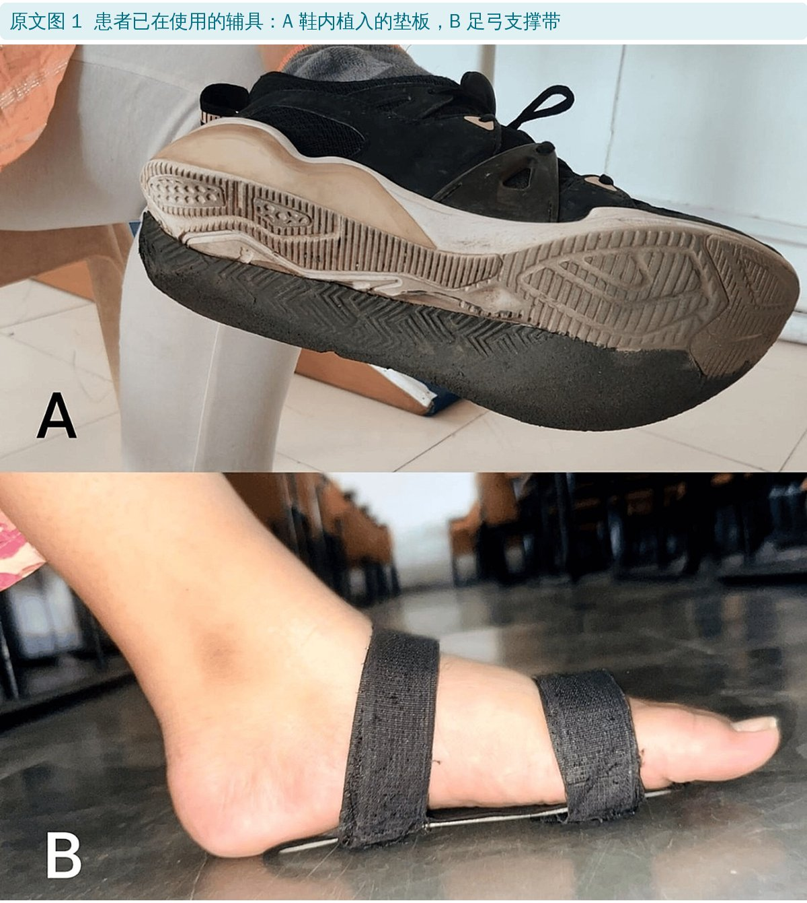
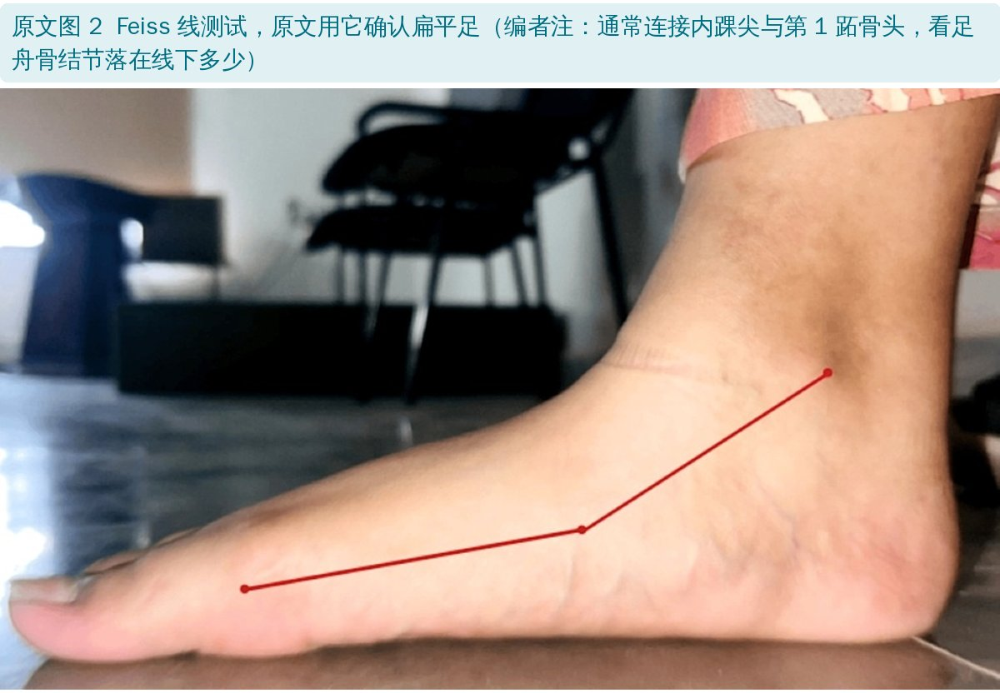
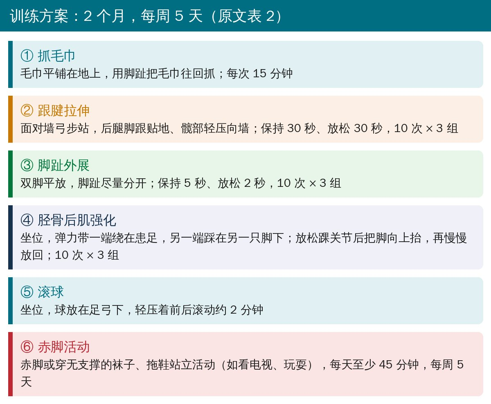
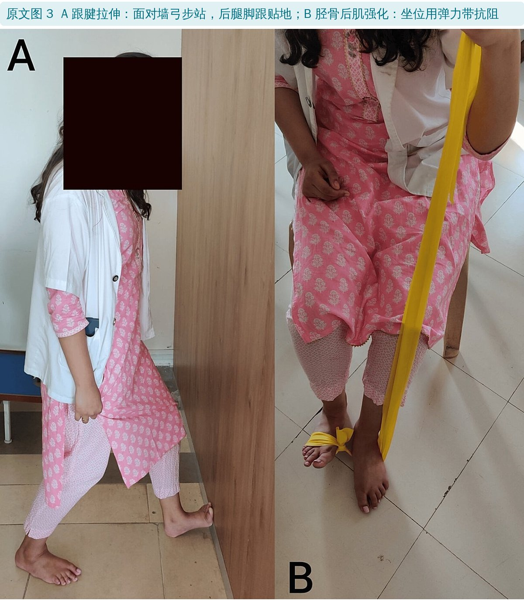
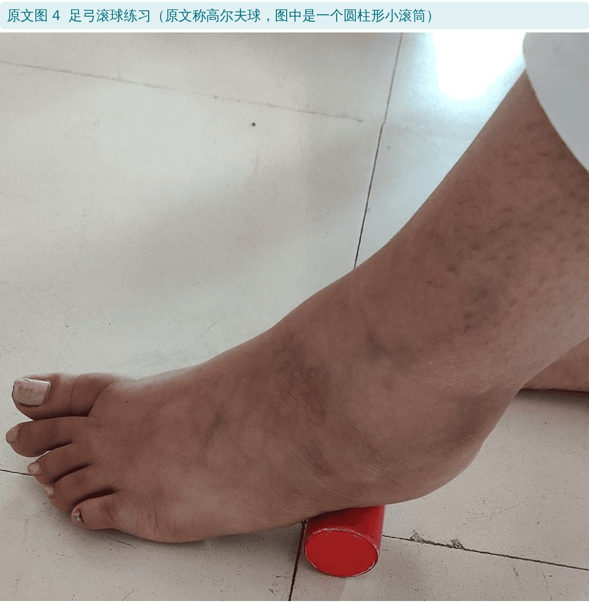
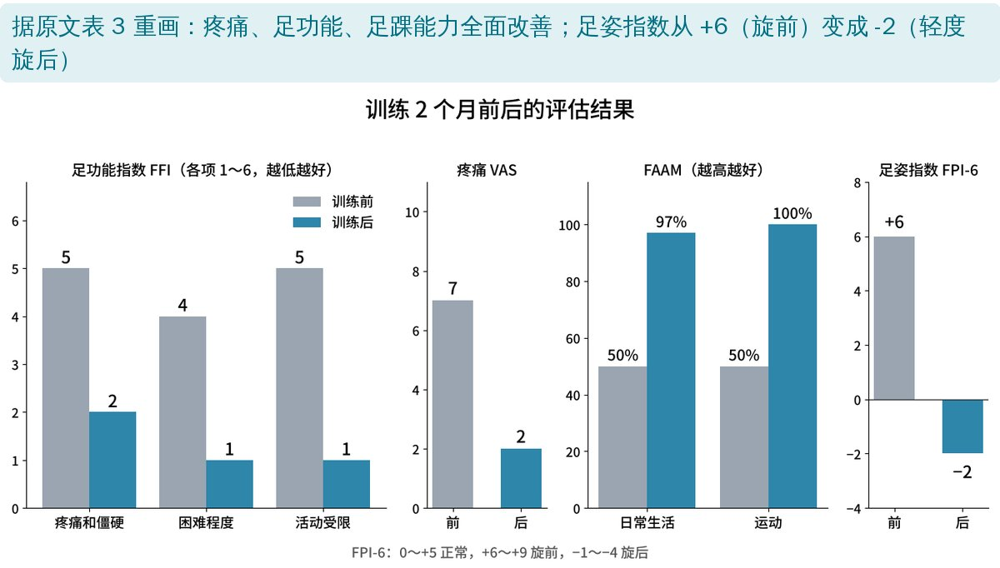
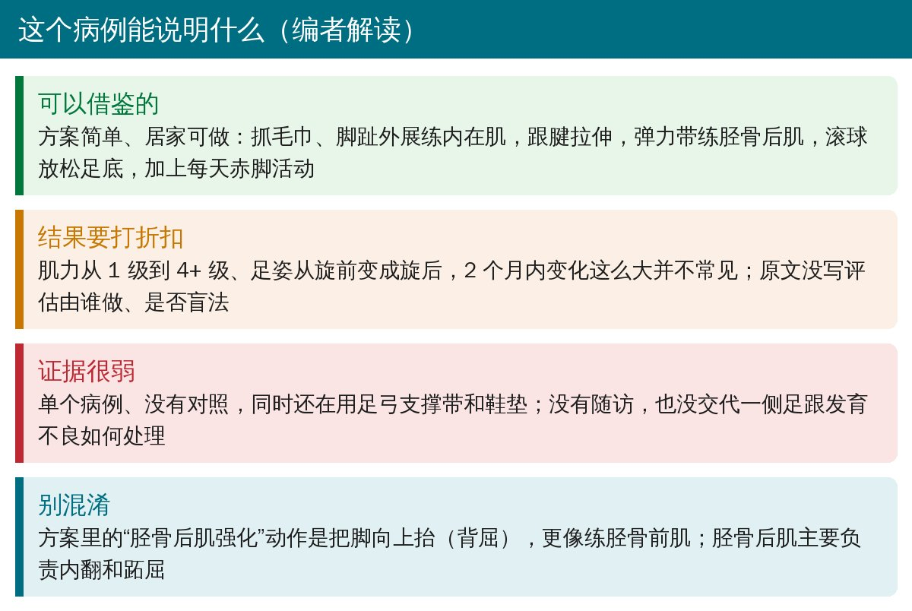

🔖原文信息（编者中文重排）
📚 文献信息
▪ Kolhe PD, Sharath HV, Rathi SG, Patil DS. Effect of Foot Rehabilitation Exercises for Painful Flat Foot in a 20-Year-Old Female: A Case Study Analysis. Cureus. 2024;16(4):e59377. doi:10.7759/cureus.59377
▪ 作者单位：印度 Datta Meghe 高等教育研究院 Ravi Nair 物理治疗学院
▪ 文章类型：病例报告（1 例）
• 20 岁女性，自幼双侧扁平足，剧烈活动时疼痛（VAS 7/10），走路困难
• 做了 2 个月、每周 5 天的足部训练：抓毛巾、跟腱拉伸、脚趾外展、弹力带抗阻、足弓滚球、每天赤脚活动 45 分钟
• 训练后疼痛 7 → 2 分，足功能、足踝能力评分明显改善，肌力从 1 级升到 4+ 级
• 但只有 1 例、没有对照，部分结果变化幅度偏大，要谨慎看待

🔖扁平足简介（编者根据原文整理）

🔖病例情况（据原文整理）

🔖原文图 1：患者已在使用的辅具

🔖原文图 2：Feiss 线测试
原文表 1：徒手肌力评定（0～5 级）
| 肌群 | 训练前 | 训练后 |
|---|---|---|
| 足内在肌 | 1 | 4+ |
| 拇展肌（脚趾外展） | 1 | 4+ |
| 踝背屈肌 | 1 | 4+ |

🔖6 个训练动作（据原文表 2 整理）

🔖原文图 3：跟腱拉伸和弹力带抗阻

🔖原文图 4：足弓滚球练习
作者的思路是：抓毛巾和脚趾外展练足内在肌，跟腱拉伸改善小腿和跟腱柔韧性，胫骨后肌强化支撑内侧纵弓、防止过度旋前，赤脚活动则让足部在没有支撑的情况下获得本体感觉反馈和肌肉激活。

🔖评估结果（据原文表 3 重画）
原文表 3：训练前后评估
| 量表 | 训练前 | 训练后 |
|---|---|---|
| 足功能指数 FFI：疼痛和僵硬 / 困难程度 / 活动受限（1～6） | 5 / 4 / 5 | 2 / 1 / 1 |
| 疼痛 VAS（0～10） | 7 | 2 |
| FAAM：日常生活 / 运动 | 50% / 50% | 97% / 100% |
| 足姿指数 FPI-6 | +6（旋前） | -2（轻度旋后） |

🔖编者解读
• 单个病例、没有对照，没有随访；训练期间仍在使用足弓支撑带和鞋垫，无法区分训练和辅具各自的作用
• 原文没写评估由谁做、是否盲法；2 个月内肌力从 1 级到 4+ 级、足姿从旋前变成旋后，变化幅度偏大
• 患者一侧足跟发育不良，原文没有交代如何处理
• 正文说足弓支撑带是图 1A、鞋内垫板是图 1B，图注和图片正好相反
• 正文说下肢肌力正常、只是背屈和内翻弱于跖屈和外翻，表 1 却记录三组肌群都只有 1 级
• “胫骨后肌强化”的动作描述是把脚向上抬（背屈），与胫骨后肌内翻、跖屈的作用不符
• 有症状的扁平足可以先试足部主动训练：抓毛巾、脚趾外展练内在肌，配合跟腱拉伸
• 练胫骨后肌要做抗阻内翻（及跖屈），而不是单纯把脚往上抬
• 赤脚活动可作为日常补充，但有明显疼痛或结构异常时，先评估再决定是否脱离辅具
• 用 FPI-6、FFI、FAAM 等量表记录前后变化，便于判断训练是否有效
欢迎关注骨科康复小黄公众号，获取更多物理治疗的专业知识！
📄参考文献：
Kolhe PD, Sharath HV, Rathi SG, Patil DS. Effect of Foot Rehabilitation Exercises for Painful Flat Foot in a 20-Year-Old Female: A Case Study Analysis. Cureus. 2024;16(4):e59377. doi:10.7759/cureus.59377
原文以知识共享署名 4.0（CC BY 4.0）协议开放获取。原文图 1～4 引自原文；评估结果图由编者根据原文表 3 重画；整理卡为编者根据原文撰写。